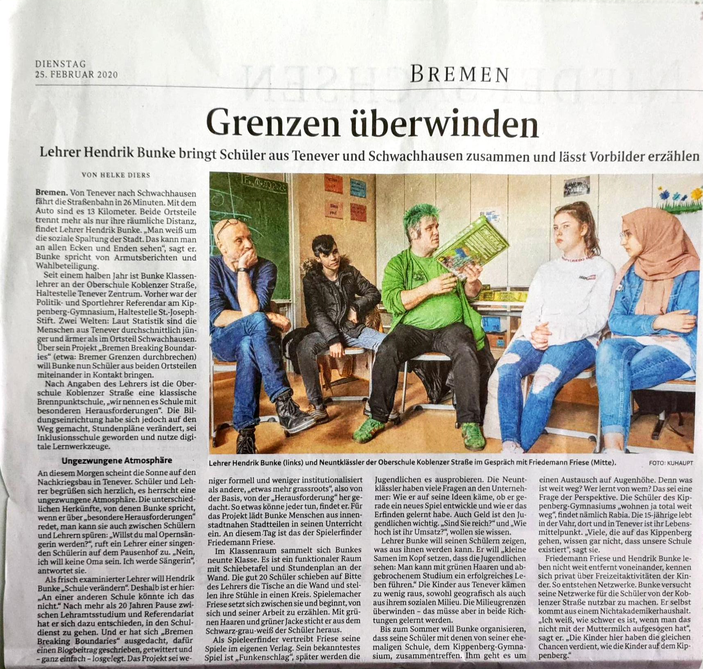

Tenever: 21,3 %
Oberneuland: 5,3 %
Tenever: 30,5 qm
Oberneuland: 62,5 qm
Tenever: 64,4 %
Oberneuland: 2,0 %
SuS bleiben im Stadtteil und lernen wenig bis gar keine anderen Stadtteile und Milieus kennen
Umgekehrt kommen auch bürgerliche Milieus kaum in den Stadtteil. Das Bild von Tenever ist geprägt von Vorurteilen und Unkenntnis.
Die Schule kann dem im Hinblick auf die soziale Zusammensetzung der Schülerschaft nicht entgegenwirken.
Schule ist - generell - eher eine "geschlossene Anstalt"
Soziale Mauern, auch im Kopf. SuS verharren in ihrem Milieu
Teil der in D eklatanten Bildungsungerechtigkeit
Ghettoisierung
Demokratie-Problem
...einfach anfangen!
Projekt
Andere Milieus und Einflüsse in Schule und Köpfe bringen
Kennenlernen, Austausch, Aktion

Weser-Kurier 25.02.2020Schule braucht Offenheit auch in sozialer Hinsicht
Kommen die SuS nicht in die Stadt, muss die Stadt in die Schule kommen
Offenheit in dieser Hinsicht braucht zunächst gar keine strukturellen Änderungen, sondern kann durch Netzwerke von Schule und Lehrkräften schnell und einfach etabliert werden
Fernsehberichte